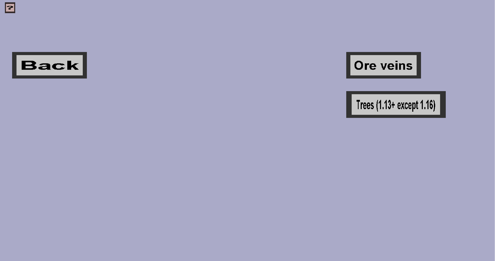

The world generation portal gives an overview of all world generation possibilities provided by this plug-in. It should look like this:
Currently, this plug-in only supports tree generators and ore vein generators. Because Spigot reworked the custom tree mechanics in minecraft 1.13, custom trees are only supported in minecraft 1.13 and later. Except that minecraft 1.16 is not supported because Spigot introduced a bug in 1.16 and fixed it in 1.17.
If you want more advanced world generation, you can check out Terra. Note: you can find instructions for working with custom blocks here (although this is the archived wiki, it might still work more or less the same in the modern versions).